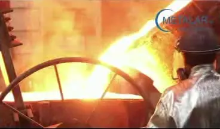

LECTURA.
Jerarquías tipográficas, subtítulos y separaciones para identificar familias de productos y servicios.
CASO 10 / DISEÑO EDITORIAL · INDUSTRIA
Traducir lo técnico
a lenguaje visual.
Material gráfico para una empresa de ingeniería y manufactura industrial. Brochures, folletos y soportes de presentación que organizan servicios, procesos y productos de alta especialización.
EXPLORAR PROYECTO
00 / EL DESAFÍO
La comunicación industrial reúne términos, procesos, aleaciones, capacidades, especificaciones y servicios que deben conservar precisión. El diseño editorial ayuda a ordenar ese volumen de información para que la pieza sea más clara y consultable sin alterar su sentido.
Jerarquías tipográficas, subtítulos y separaciones para identificar familias de productos y servicios.
Un lenguaje gráfico que conecta información técnica, imágenes industriales y datos comerciales.
Contenidos ordenados para acompañar presentaciones comerciales y la comunicación institucional.
01 / FORMATOS DE TRABAJO
Los archivos históricos conservan distintas versiones de brochures y folletos de 2012–2013. Esta selección describe el enfoque editorial de la documentación y sus distintas aplicaciones comerciales.
Presentación general de la empresa, sus procesos, plantas, mercados de aplicación, líneas de ingeniería y capacidades productivas.
Folletos con categorías de fundición y mecanizado, aplicaciones industriales, componentes y referencias técnicas.
Archivo audiovisual de procesos de planta y producción. Se presenta como material de contexto del proyecto; la producción audiovisual no se atribuye al diseñador sin documentación.
La secuencia ilustra el tipo de arquitectura editorial del proyecto. Las páginas originales se incorporarán únicamente tras seleccionar y revisar las versiones definitivas.
02 / CRITERIOS DE AUTORÍA
Metalar ya contaba con su actividad, conocimientos técnicos y materiales de marca. Este caso se presenta como trabajo gráfico y editorial sobre información industrial proporcionada por la empresa. No se atribuye a Luis la ingeniería, la fabricación de productos, la fotografía ni la creación del logotipo sin evidencia específica.
Alcance: diseño y maquetación de materiales corporativos para un entorno industrial. Los registros de planta aportan contexto y no prueban la autoría de la filmación. La ingeniería, la fabricación y las fotografías no se atribuyen al trabajo gráfico.
10 / 17 · PORTFOLIO PERSONAL
Una experiencia de comunicación en un sector donde la claridad, el orden y la precisión del contenido son parte del valor del diseño.